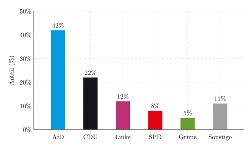
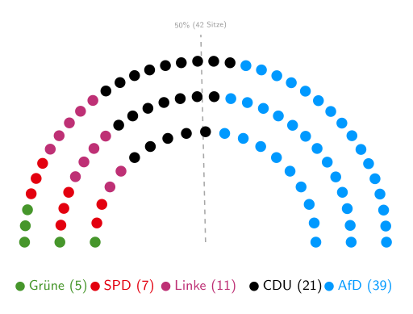

Am Sonntag, den 6. September 2026 (übermorgen!), wird in Sachsen-Anhalt ein neuer Landtag gewählt. Ich will die Gelegenheit als Fingerübung nutzen, um mal wieder ein paar Prognosen zu machen.
Die Umfragen
Ich habe keinerlei Wissen über Sachsen-Anhalt, daher muss ich mich auf Umfragen verlassen. Auf wahlrecht.de kann man die aktuellen Umfragen einsehen. Betrachtet man nur die 4 Umfragen der letzten 2 Wochen, so ergibt sich folgendes Bild:
- AfD: 40-43%
- CDU: 22-23%
- Linke: 11-13%
- SPD: 7-9%
- Grüne: 5-6%
- BSW: 3-4%
- Sonstige: 6-7%
Der Landtag von Sachsen-Anhalt hat 83 Sitze, aber durch Überhang- und Ausgleichsmandate ist die Zahl der Sitze bereits in der aktuellen Legislaturperiode auf 97 angestiegen.
Prognose 1: Die Grünen verhindern eine AfD-Alleinregierung
Ich gehe davon aus, dass es die SPD und Grünen in den Landtag von Sachsen-Anhalt schaffen werden, BSW jedoch nicht.
Das Ergebnis könnte in etwa so aussehen:
{kind=link}

Die 5%-Hürde besagt, dass Parteien nur dann in den Landtag einziehen, wenn sie mindestens 5% der Stimmen erhalten. Das würde folgende Sitzverteilung ergeben:
{kind=link}

Das hätte einige Konsequenzen:
- Der AfD würden 3 Sitze zur absoluten Mehrheit fehlen - bei 83 Sitzen würden sie 42 Sitze benötigen.
- Da die AfD keine Koalitionspartner hat/will, würde sie keine Regierung bilden können.
- Nur alle anderen Parteien zusammen könnten eine Regierung bilden. Das wurde allerdings bereits von der CDU auf Bundesebene ausgeschlossen (Unvereinbarkeitsbeschluss). Auch der amtierende Ministerpräsident und Spitzenkandidat der CDU, Sven Schulze, hat eine Zusammenarbeit mit der Linken bereits ausgeschlossen (Markus Lanz, 7. Juli 2026).
Prognose 2: Die AfD wird von Wahlbetrug reden
In Trump'scher Manier sägt man weiter an unserer Demokratie:
Briefwahl: Wie die AfD Sorgen vor Wahlbetrug befeuert titelte ZDFheute am 27. August.
Insbesondere wenn es knapp wird, gehe ich davon aus, dass die AfD die Integrität der Briefwahl in Frage stellen wird.
Das hat System:
- Mai 2024: AfD sät Zweifel an Briefwahl ‒ Stadt bezieht Stellung
- September 2024: Faktencheck: Das steckt hinter dem Briefwahlbetrugs-Vorwurf
- Oktober 2025: AfD zweifelt Briefwahlergebnisse bei Bürgermeisterwahlen an
Eine solche Demontage unserer Demokratie dürfen wir nicht dulden:
Petition: AfD-Verbot jetzt auf den Weg bringen
Prognose 3: Es wird eine CDU-Minderheitsregierung geben
Typischerweise bilden Parteien Koalitionen, um eine Regierung zu bilden, welche im Parlament eine Mehrheit hat. Das hat den Vorteil, dass die Regierungsparteien im Parlament Gesetze alleine durchbringen können.
Der Ministerpräsident wird von den Abgeordneten des Landtags gewählt und bestimmt sein Kabinett. Das Kabinett ist die Regierung. Typischerweise klärt die größte Partei vor der Wahl zum Ministerpräsidenten, mit welchen Partner(n) sie eine Koalition bilden will und wer welche Ministerposten bekommt. Das ist in Sachsen-Anhalt aller Voraussicht nach nicht möglich.
Es gibt allerdings auch die Möglichkeit einer Minderheitsregierung. Das bedeutet, dass die Regierungsparteien im Parlament keine Mehrheit haben. Dafür gibt es zwei Modelle:
- Feste Tolerierung: Das ist schon fast wie eine Koalition. Hierbei unterstützt immer die gleiche Oppositionspartei die Regierung. Das war in Sachsen-Anhalt von 1994 bis 2002 der Fall, als die SPD von der PDS toleriert wurde (Magdeburger Modell).
- Wechselnde Mehrheiten: Die Regierung kann sich auch für jedes einzelne Vorhaben immer neue Mehrheiten suchen. Das setzt eine grundsätzliche Tolerierung mehrerer Oppositionsparteien voraus. Obwohl es dabei keine formelle Zusammenarbeit zwischen der Regierung und der Opposition gibt, kann es einen Konsultationsmechanismus geben. Im Grunde fragt man also die Opposition, ob ein Gesetzesentwurf für sie akzeptabel ist. Man sucht also zusammen nach einer Mehrheit - für jede einzelne Gesetzesvorlage.
- Das Kabinett Kretschmer III (CDU und SPD) in Sachsen hat im Sächsischen Landtag nur 51 von 120 Sitzen. Die fehlenden 10 Stimmen können sie von BSW (15), Grüne (7), Linke (6) oder FW (1) erhalten. Dafür wurde eine Konsultations- und Informationsvereinbarung eingeführt.
- Das Kabinett Voigt (CDU, SPD, BSW) in Thüringen hat im Thüringer Landtag 44 von 88 Sitzen (Brombeerkoalition). Wegen BSW-Austritten haben sie selbst diese 50% nicht mehr.
Das heißt, es wird voraussichtlich 2-3 Wahlgänge für den Ministerpräsidenten geben:
- Wahlgang: Ulrich Siegmund (AfD) wird alle AfD-Stimmen erhalten, aber keine weiteren. Sven Schulze (CDU) wird wohl alle CDU-Stimmen erhalten und eventuell ein paar weitere. Ob Linke/SPD/Grüne überhaupt einen Kandidaten aufstellen, ist fraglich. Es wird vermutlich keine absolute Mehrheit geben.
- Wahlgang: Nochmals ähnlich. Es wird spannend, ob es Abweichler gibt.
- Wahlgang: Hier genügt eine relative Mehrheit. Das heißt, wenn sich die anderen Parteien nicht auf Sven Schulze einigen können, wird es einen AfD-Ministerpräsidenten geben.
Allerdings gehe ich davon aus, dass Linke/SPD/Grüne und auch die CDU das unbedingt verhindern wollen.
Prognose 3: Es wird schlussendlich eine CDU-Minderheitsregierung aus CDU und SPD geben, aber in jedem Fall mit einem Konsultationsmechanismus.
Wie beeinflusst das den Bund?
In jedem Fall ist eine Minderheitsregierung aufwendig. Es ist sehr viel wahrscheinlicher, dass es keine größeren Änderungen geben wird.
Aktuelle große Themen in Sachsen-Anhalt:
- Im August 2026 gibt es in Sachsen-Anhalt eine Arbeitslosenquote von 8,5% und eine Unterbeschäftigungsquote von 10,2% (statistik.arbeitsagentur.de)
- Im Juli 2026 teilte das statistische Landesamt Sachsen-Anhalts eine Verschuldung der Kernhaushalte der Kommunen von 3711 Mio. EUR mit. Wenn den Kommunen das Geld ausgeht, spüren die Menschen das direkt in höheren Kita/Kindergarten-Gebühren, teureren Schwimmbad-Besuchen, verringertem ÖPNV-Angebot oder sogar Schließungen.
- Demographie: Die Altersstruktur in Sachsen-Anhalt ist besonders ungünstig. Sachsen-Anhalt hat das höchste Durchschnittsalter in Deutschland. Das könnte zu einem verschärften Lehrermangel führen. Auch weitere Fachkräfte, insbesondere im Gesundheitswesen (Hausärzte und Pfleger), werden fehlen. Eine starke AfD macht es für Fachkräfte auch unattraktiver, nach Sachsen-Anhalt zu ziehen.
- Strukturwandel: Braunkohle war wichtig für die Wirtschaft in Sachsen-Anhalt und das muss sich ändern. Da steckt man bereits viel Geld rein (Quelle).
Insbesondere an der Demographie kann man kaum etwas ändern - schon gar nicht kurzfristig und mit unklaren Mehrheiten. Die Probleme werden also eher größer. Vermutlich wird die AfD dann gestärkt.
Nur ein deutlicher Impuls aus dem Bund könnte hier etwas bewegen, indem sich die gefühlte wirtschaftliche Lage der Menschen verbessert. Dafür bräuchte es ein echtes Investitionspaket, so wie wir Grüne es mit dem 500-Milliarden-Sondervermögen (Sondervermögen Infrastruktur und Klimaneutralität) anstoßen wollten. Es ist kritikwürdig und aus meiner Sicht politisch unklug, dass die CDU das Sondervermögen zweckentfremdet hat.
Solange das Kabinett Merz bestehen bleibt, wird sich daran wohl nichts ändern. Dann werden wir die Union wohl noch unter 20% in den Umfragen sehen (aktuell: 21%).
Was könnte schiefgehen?
- Anschläge: Die AfD und die CDU profitieren von Anschlägen, die vor der Wahl passieren, weil die Wähler diesen Parteien Kompetenz in der Verbrechensbekämpfung zuschreiben. Beispiele für solche Ereignisse sind:
- Umweltkatastrophen: Die Umweltkompetenz der Grünen erfüllt eine ähnliche Rolle. Das hat man an dem Reaktorunfall in Fukushima 2011 gesehen, der die Grünen in der Landtagswahl in Baden-Württemberg im März 2011 gestärkt hat.
- Kiss of Death: Wenn eine extrem polarisierende oder in einer bestimmten Wählerschaft unbeliebte Person (wie z. B. Donald Trump) eine Wahlempfehlung oder ein Lob ausspricht, schadet dies dem Gelobten oft mehr, als es ihm hilft. Das Lob macht den Kandidaten für die gegnerische Seite oder Wechselwähler angreifbar und "kontaminiert" sein Image. Merz ist unbeliebt.
- Wählermobilisierung: Kommen die Grünen nicht in den Landtag oder das BSW überraschend doch, dann ändert sich die Situation komplett. Dann könnte die AfD eine absolute Mehrheit haben und eine Regierung bilden oder mit dem BSW eine Koalition bilden. Das wäre ein sehr problematisches Szenario.
- CDU in Sachsen-Anhalt: Die CDU könnte sich weigern, in Regierungsverantwortung zu gehen oder mit der AfD zusammen eine Regierung bilden. Beides würde mich überraschen.